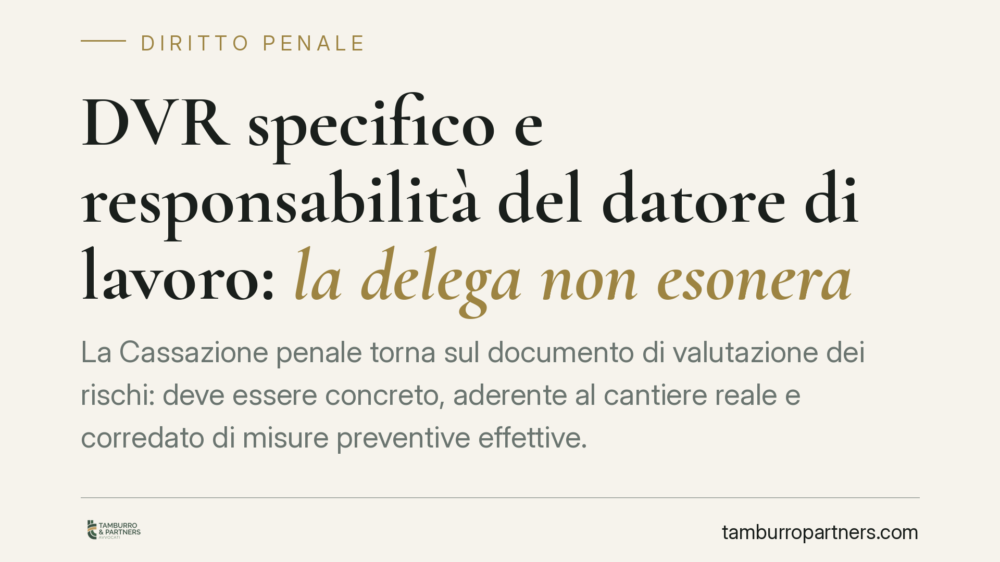

DVR specifico e responsabilità del datore di lavoro: la delega non esonera
La Cassazione penale torna sul documento di valutazione dei rischi: deve essere concreto, aderente al cantiere reale e corredato di misure preventive effettive. Affidarne la stesura a un consulente esterno non trasferisce la responsabilità penale. In caso di infortunio, il datore di lavoro resta chiamato a rispondere se il DVR era carente. Un principio che impone di ripensare come si redige e si aggiorna questo documento.

Il caso e la decisione
La Sezione Quarta della Cassazione penale ha ribadito un principio consolidato ma spesso trascurato nella prassi: il documento di valutazione dei rischi (DVR) non è un adempimento formale. Un cantiere "sicuro sulla carta" ma pericoloso nei fatti espone il datore di lavoro a responsabilità penale quando si verifica un infortunio.
Il nodo è la distanza tra il documento e la realtà operativa. Un DVR costruito su formule standard, non calato sulle lavorazioni effettivamente svolte, non assolve la funzione che la legge gli assegna. E l'aver affidato la sua redazione a un consulente esterno non sposta la responsabilità su quest'ultimo.
Inquadramento normativo
L'art. 28 del D.lgs. 81/2008 impone che la valutazione dei rischi riguardi "tutti i rischi per la sicurezza e la salute dei lavoratori". Il documento deve contenere, tra l'altro, l'indicazione delle misure di prevenzione e protezione attuate e il programma delle misure ritenute opportune per garantire il miglioramento nel tempo dei livelli di sicurezza.
La norma richiede quindi due requisiti distinti: specificità (il DVR deve fotografare i rischi concreti di quella attività) e completezza delle misure preventive. Un documento generico viola entrambi.
La valutazione dei rischi, inoltre, rientra tra gli obblighi che l'art. 17 del medesimo decreto qualifica come non delegabili. Il datore di lavoro può avvalersi del supporto tecnico di un Responsabile del Servizio di Prevenzione e Protezione (RSPP) o di un consulente esterno per la stesura materiale, ma la titolarità dell'obbligo — e la responsabilità che ne discende — resta in capo a lui.
Perché la delega non basta
La distinzione è cruciale e spesso fraintesa. Affidare a un professionista la redazione del DVR è prassi legittima e diffusa. Ma si tratta di una delega di attività materiale, non di un trasferimento della posizione di garanzia.
Il datore di lavoro conserva il dovere di verificare che il documento sia aderente alla realtà aziendale. Non può limitarsi a firmare un testo predisposto da altri senza controllarne la congruenza con le lavorazioni concrete. Se il DVR risulta carente e da quella carenza deriva l'infortunio, il nesso di responsabilità penale resta integro.
Diverso, naturalmente, il profilo del consulente: una sua negligenza nella redazione può generare una responsabilità concorrente, ma non assorbe né elimina quella del datore di lavoro.
Implicazioni pratiche
Per chi gestisce un'impresa, soprattutto nei settori a rischio come l'edilizia, il messaggio è netto. Il DVR non è un documento da archiviare dopo la redazione. È uno strumento operativo che deve seguire l'evoluzione del cantiere: nuove lavorazioni, nuove attrezzature, cambi di fase, presenza di imprese terze.
Un documento aggiornato all'avvio dei lavori ma rimasto fermo mentre il cantiere cambiava è potenzialmente inadeguato. E l'inadeguatezza, in sede penale, pesa.
Il ruolo di dirigenti e preposti non va sottovalutato: la ripartizione delle responsabilità lungo la catena aziendale dipende dai poteri effettivamente esercitati, non solo dagli organigrammi. Ma il vertice dell'obbligo di valutazione rimane il datore di lavoro.
Cosa fare in concreto
- Verificate la specificità del DVR. Controllate che il documento descriva le lavorazioni realmente svolte e i rischi effettivi, non formule astratte riprese da modelli standard.
- Aggiornate il documento a ogni variazione rilevante. Nuove fasi di lavoro, attrezzature o rischi impongono una revisione tempestiva.
- Non limitatevi a firmare. Se vi avvalete di un consulente, esaminate il contenuto e segnalate le incongruenze rispetto alla realtà operativa.
- Formalizzate i controlli. Conservate traccia delle verifiche effettuate e delle misure attuate: in sede giudiziaria la documentazione fa la differenza.
- Definite con chiarezza deleghe e poteri. Chiarite per iscritto ruoli e competenze di dirigenti e preposti, nei limiti di legge.
La sicurezza sul lavoro si misura sui fatti, non sulla carta. Un DVR formalmente ineccepibile ma scollegato dalla realtà non protegge né i lavoratori né chi ne risponde.
Disclaimer
Contributo informativo a cura di Tamburro & Partners - Avv. Giuseppe Tamburro. Non costituisce parere legale.
Ogni condominio ha una storia a sé.
Se gestisci un'amministrazione e vuoi un confronto su una specifica questione condominiale, scrivi allo studio. Ti rispondiamo entro un giorno lavorativo.